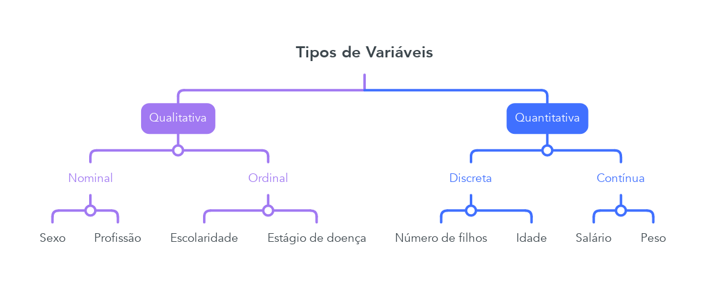

Capítulo 4 Medidas Descritivas
4.1 Tipos de Variáveis
Antes de analisarmos conjuntos de dados propriamente, é necessário termos um conhecimento sobre tipos de variáveis. Para isto, consideremos a seguinte tabela:
nome = c('Guilherme', 'Leon', 'Nilce')
est_civil = c('Solteiro', 'Casado', 'Casado')
escolaridade = c('Ensino médio completo',
'Pós-graduação',
'Superior completo')
n_filhos = c(1, 0, 0)
salario = c(1500, 3000, 3000)
idade = c(21, 39, 32)
df = data.frame(nome, est_civil, escolaridade, n_filhos, salario, idade)
kable(df, align = 'c') # Melhor visualização dos dados para este PDF| nome | est_civil | escolaridade | n_filhos | salario | idade |
|---|---|---|---|---|---|
| Guilherme | Solteiro | Ensino médio completo | 1 | 1500 | 21 |
| Leon | Casado | Pós-graduação | 0 | 3000 | 39 |
| Nilce | Casado | Superior completo | 0 | 3000 | 32 |
Variáveis como sexo, escolaridade e estado civil apresentam realizações de uma qualidade ou atributo do indivíduo pesquisado, enquanto outras como número de filhos, salário e idade apresentam números como resultados de uma contagem ou mensuração. Chamamos as do primeiro tipo de qualitativas e as do segundo de quantitativas
Cada uma das duas ainda pode ser dividida em dois tipos:
Variável qualitativa nominal: atributos não apresentam uma ordem lógica;
Variável qualitativa ordinal: atributos apresentam uma ordem lógica bem estabelecida;
Variável quantitativa discreta: dados de contagem, assumem apenas valores inteiros;
Variável quantitativa contínua: dados que podem assumir qualquer tipo de valor.

Muitas vezes queremos resumir estes dados, apresentando um ou mais valores que sejam representativos da série toda. Neste contexto entram às medidas de posição e dispersão.
4.2 Medidas de Posição
Usualmente utilizamos uma das seguintes medidas de posição (ou localização): média, mediana ou moda. Vamos as suas definições:
Moda: valor mais frequente do conjunto de valores observados.
Mediana: valor que ocupa a posição central das observações quando estas estão ordenadas em ordem crescente.
- Quando o número de observações for par, usa-se como mediana a média aritmética das duas observações centrais.
Média: soma de todos os elementos do conjunto dividida pela quantidade de elementos do conjunto
\[ \overline{x} = \frac{x_1+x_2 + \dots + x_n}{n} \]
4.3 Medidas de Dispersão
O resumo de um conjunto de dados por uma única medida representativa de posição esconde toda a informação sobre a variabilidade de um conjunto de observações. Consideremos que cinco alunos realizaram cinco provas, obtendo as seguintes notas:
nomes = c('alunoA', 'alunoB', 'alunoC',
'alunoD', 'alunoE')
alunoA = c(3,4,5,6,7)
alunoB = c(1,3,5,7,9)
alunoC = c(5,5,5,5,5)
alunoD = c(3,5,5,5,7)
alunoE = c(3,5,5,6,6)
df = data.frame(alunoA, alunoB, alunoC, alunoD, alunoE)
row.names(df) = nomes
df## alunoA alunoB alunoC alunoD alunoE
## alunoA 3 1 5 3 3
## alunoB 4 3 5 5 5
## alunoC 5 5 5 5 5
## alunoD 6 7 5 5 6
## alunoE 7 9 5 7 6